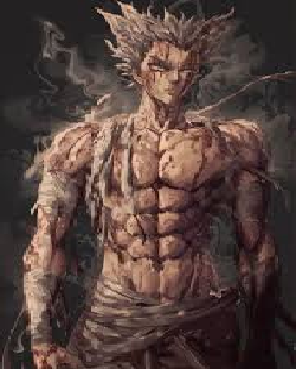

Garou
Garou es un artista marcial prodigio y el "cazador de héroes", conocido como el "monstruo humano". Es un antagonista en One Punch Man que, tras ser expulsado del dojo de su maestro Bang, se dedica a cazar héroes, adoptando una filosofía de admirar a los monstruos por su perseverancia. Su habilidad principal es el arte marcial, que combina con una fuerza y resistencia sobrehumanas, reflejos y la capacidad de adaptarse a los límites.
